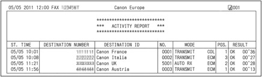
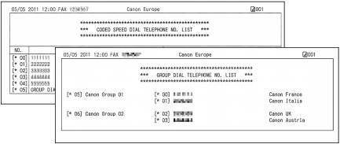

The machine has various fax functions as follows.
For details, refer to the on-screen manual: Advanced Guide.
 Advanced FAX settings
Advanced FAX settingsYou can select the following items and change their settings by pressing the Setup button, then select Device settings, FAX settings, and Advanced FAX settings.
For details, refer to the on-screen manual: Advanced Guide.
 Auto redial
Auto redial
When the recipient's line is busy, the machine will redial the number after a specified interval. You can change the number of redialing times or the redialing interval.
Dial tone detect
Sets the machine to check for a dial tone before sending a fax. This prevents an incorrect transmission caused when operations for outgoing and incoming calls are required simultaneously.
 Note Note
|
Pause time settings
Sets the length of time paused for each press of the Redial/Pause button when entering fax/telephone number.
TTI position
For sending faxes in black & white, selects the position to print the sender information from outside or inside the image area.
When sending faxes in color, the sender information is printed inside the image area.
Color transmission
When faxing color documents using the ADF, the machine scans documents in black & white and send them if the recipient's fax machine does not support color faxing.
RX image reduction
Reduces to print received faxes automatically so that they fit in the selected page size.
Adv. communication settings
Sets whether to send/receive faxes using the ECM (Error Correction Mode) and selects the fax sending/receiving speed.
* For Remote RX in Advanced FAX settings, see Using Various Receiving Functions.
Print reports/listsPress the left Function button to select FAX menu, then select Print reports/lists. The various kinds of reports or lists in this screen can be printed.
This section shows samples of the Activity report and Telephone number list.
| Note Printing reports automatically
For details, refer to the on-screen manual: Advanced Guide. |
Activity report
Prints the history of sent and received faxes. The machine prints an Activity report after every 20 transactions by default.

Telephone number list

Security controlThe following settings become available by pressing the Setup button, then select Device settings, FAX settings, and Security control.
For details, refer to the on-screen manual: Advanced Guide.
FAX number re-entry
To prevent dialing a wrong number, you enter the same number again for confirmation after entering the fax/telephone number with the Numeric buttons, and can send the fax only when the number is identical.
Check RX FAX information
Checks whether the dialed fax/telephone number and the sender information of recipient's fax machine are the same. If not, stop sending faxes.
Hook key setting
Selects whether to enable or disable the Hook button on the machine to dial without picking up the handset of the telephone when sending a fax.
FAX reception reject
The machine can be set to reject faxes from specific senders. The fax reception rejection can be set for the faxes sent with no sender information, the numbers not registered to the coded speed dial, or the numbers registered to the rejected numbers.
Registration to Rejected numbers can be also performed on a computer using Speed Dial Utility supplied with the machine.
Caller rejection
Rejects the calls from the specific senders if you have subscribed to the Caller ID service.
| Note
|